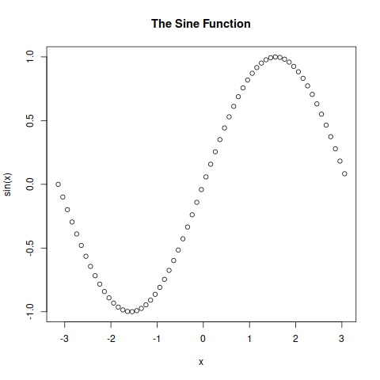

Chapter 7: Misc Topics
7.1 Polar Coordinates Intro
- ⬇ Handout 27: Intro to Polar Coordinates
- ⬇ Handout 28: Chapter 7 Review
- ⬇ Handout 29: Euler’s Identity: Solutions to some exercises
Video Lecture
Video Lecture Notes
Polar coordinate system
- \((r, \theta)\), where \(r\) as the radius and \(\theta\) as the angle form the origin.
7.2 Polar Graphs
Video Lecture 1
Video Lecture 1 Notes
Plotting points (3:04)
To get the shape of a polar equation, for example \(r = 7 + 10\cos(\theta)\), plot the \(0^{\circ}, 90^{\circ}, 180^{\circ}, 270^{\circ}\) (10:58)
- \(-1 \ge \sin(\theta) \le 1\) (17:40)
\(-1 \ge \cos(\theta) \le 1\) (25:14)
Video Lecture 2
Video Lecture 2 Notes
Converting Cartesian to Polar Coordinates
| \(x\) | \(r\cos(\theta)\) |
|---|---|
| \(y\) | \(r\sin(\theta)\) |
| \(r^{2}\) | \(x^{2} + y^{2}\) |
| \(r\) | \(\sqrt{x^{2} + y^{2}}\) |
| \(\theta\) | \(\tan^{-1}(\frac{y}{x})\) |
| \(\frac{y}{x}\) | \(\tan(\theta)\) |
Examples of Cartesian to Polar
- \(y = x^{2}\) (3:07)
- \(r\sin(\theta) = r^{2}\cos^{2}(\theta)\)
- \(r = 5\) (4:41)
- \(x^{2} + y^{2} = 25\)
Examples of Polar to Cartesian
7.3 Complex Numbers Intro
- ⬇ Handout 31: Intro to Complex Numbers exercises v1
- ⬇ Handout 32: Intro to Complex Numbers exercises v2
Video Lecture
Video Lecture Notes
| \(i\) | \(i\) |
| \(i^{2}\) | \(\text{-}1\) |
| \(i^{3}\) | \(\text{-}i\) |
| \(i^{4}\) | \(1\) |
| \(i^{5}\) | \(i\) |
| \(i^{6}\) | \(\text{-}1\) |
| \(i^{7}\) | \(\text{-}i\) |
| \(i^{8}\) | \(1\) |
| \(i^{9}\) | \(i\) |
| … | … |
\[ \begin{aligned} i^{103} &= i^{100} \cdot i^{3} \\ &= (i^{4})^{25} \cdot \\ &= i^{25} \cdot i^{3} \\ &= 1 \cdot i^{3} \\ &= -i \end{aligned} \]
- Two binomials with all terms are identical except for the sign in between two terms of the binomial are opposite.
- Only works for \(+\) and \(-\) sign.
Using Conjugates
7.4 Complex Numbers Part II
- ⬇ Handout 33: More on Complex Numbers exercises v1
- ⬇ Handout 34: More on Complex Numbers exercises v2
Video Lecture
Video Lecture Notes
- \(i = e^{i \cdot 90^{\circ}}\) (21:26)
- \(0 = e^{i \pi} + 1\)
- \(e^{i\theta} = \cos(\theta) + i\sin(\theta)\)
Euler’s uses RADIANS instead of degrees
Converting complex numbers to Euler form
- \(3 + 2i \to re^{i\theta}\) (14:53)
Converting numbers to complex numbers
- \(-1 \to \mathbb{C}\) (Complex number) (22:40)
7.5 Eulers Identity
Video Lecture
Video Lecture Notes
Converting complex numbers in standard form to Euler form and…
Multiplying:
- \((3 + 2i)(1 + 2i)\) (1:00)
- \((\frac{1}{2} + \frac{\sqrt{3}}{2}i)(\frac{\sqrt{3}}{2} + \frac{1}{2}i)\) (3:26)
Multiplying numbers with exponents with the same base: add the exponents together and copy the base.
Dividing:
- \(\dfrac{(3 + 2i)}{(1 + 2i)}\) (6:14)
Dividing numbers with exponents with the same base: subtract the exponents from the subtrahend and copy the base.
Dealing with Complex numbers in standard form with powers:
- \((3 + 2i)^{10}\) (10:05)
Dealing with roots of complex numbers:
- \(\sqrt{i} = e^{90^{\circ}i}\) (14:10)
Roots of unity (20:00)
Daabz Questions
- \([4e^{i(180^{\circ})}]^{\frac{1}{7}}\)
- \(4^{\frac{1}{7}}e^{i(\frac{180^{\circ}}{7})}\)
- \(\sqrt[7]{4}e^{i(\frac{180^{\circ}}{7})}\)
- Suppose \(-7 + -2i = re^{i\theta}\)
- \(\tan(\theta) = \frac{-2}{-7}\)
- \(r^{2} = (-7)^{2} + (-2)^{2}\)
- \(\sqrt[3]{[9\cos(-180^{\circ}) + i9\sin(-180^{\circ})]}\)
- \(\sqrt[3]{9}[\cos(\frac{-180^{\circ}}{3}) + i\sin(\frac{-180^{\circ}}{3}))]\)
- \(\sqrt[3]{9}^{i(\frac{-180^{\circ}}{3})}\)
- \(9^{\frac{1}{3}}e^{(\frac{-180^{\circ}}{3})}\)
- \(9e^{i(-270^{\circ})} \cdot 2e^{i(-180^{\circ})}\)
- \(18\cos(-450^{\circ}) + i18\sin(-450^{\circ})\)
- \((9 \cdot 2) \cdot e^{i(-270^{\circ} + (-180^{\circ}))}\)
- \(\frac{4\cos(-120^{\circ}) + i4\sin(-120^{\circ})}{5\cos(240^{\circ}) + i5\sin(240^{\circ})}\)
- \(\frac{4}{5}\cos(-120^{\circ} - 240^{\circ}) + i\frac{4}{5}\sin(-120^{\circ} - 240^{\circ})\)
- \(\frac{4}{5}\cos(-360^{\circ}) + i \cdot \frac{4}{5}\sin(-360^{\circ})\)
- \(\sqrt[7]{3e^{i(330^{\circ})}}\)
- \(3^{\frac{1}{7}}e^{i(\frac{330^{\circ}}{7})}\)
- \(\frac{5e^{i(210^{\circ})}}{8e^{i(-150^{\circ})}}\)
- \(\frac{5}{8}\cos(360^{\circ}) + i \cdot \frac{5}{8}\sin(360^{\circ})\)
- \(\frac{5}{8}\cos(210^{\circ}- (-150^{\circ}) + i\frac{5}{8}\sin(210^{\circ}) - (-150^{\circ}))\)
7.6 Introduction To Vectors
Video Lecture
Video Lecture Notes
- Represents direction and size/magnitude.
- Adding/Subtracting Vectors (5:00)
- Scalars (10:50)
- Scaling the size (flip direction if negative) of a vector
- Magnitude, Normalize a Vector (14:07)
- Size of the hypotenuse that the vectors make
- Use pythagorean to get the magnitude
- Denoted by \(\|\vec{V}\|\), where \(\vec{V}\) as the vector and \(\|\|\) as the magnitude of the vector.
- Normalized/Unit vector is a vector that has a magnitude exactly equals to 1.
- \(N_{\vec{v}}\) Can be computed as \(\dfrac{1}{\|\vec{v}\|}\vec{v}\)
- \(N_{\vec{v}}\) only changes the magnitude, therefore, \(N_{\vec{v}}\) has the same direction as \(\vec{v}\)
7.7 Introduction To The Dot Product
Some famous Dot Product properties
- \(u \cdot v = v \cdot u\)
- \((u + w) \cdot v = u \cdot v + w \cdot v\)
- \(u \cdot (cv) = c(u \cdot v)\)
- \(u \cdot u \ge 0\)
- \(u \cdot u = 0 \Longleftrightarrow u = 0\)
Video Lecture
Video Lecture Notes
- \(\langle {\color{#ff0000}{1}}, {\color{#00ff00}{5}}, {\color{#0000ff}{0}} \rangle \cdot \langle {\color{#ff0000}{3}}, {\color{#00ff00}{1}}, {\color{#0000ff}{-5}} \rangle\)
- multiply each, \({\color{#ff0000}{3}} + {\color{#00ff00}{5}} + {\color{#0000ff}{0}}\)
- \(8\)
Magnitude by Dot (10:35)
- \(\|\vec{v}\|^{2} = \vec{v} \cdot \vec{v}\)
Distance by Dot
- \(\|\vec{w} - \vec{v}\|^2 = (\vec{w} - \vec{v}) \cdot (\vec{w} - \vec{v})\)
- \(\|\vec{w} - \vec{v}\| = \sqrt{(\vec{w} - \vec{v}) \cdot (\vec{w} - \vec{v})}\)
Angle between by Dot (15:34)
- \(\cos(\theta) = \dfrac{\vec{v} \cdot \vec{w}}{\|\vec{v}\| \|\vec{w}\|}\)
Perpendicular \(\perp\) Test by Dot (24:24)
- If the Dot Product is zero, its perpendicular
- \(\vec{v} \perp \vec{w} \Longleftrightarrow \vec{v} \cdot \vec{w} = 0\)
Projections by Dot (28:30)
- \(proj_{\vec{w}}\vec{v} = \dfrac{\vec{v} \cdot \vec{w}}{\|\vec{w}\| \|\vec{w}\|} \cdot \vec{w}\)
Comprehensive Review
Daabz Questions
- If the equation of a graph is modified by replacing \(x \to 5x -12\), the consequences on the graph are
- shift RIGHT 12 then SCALE \(x\)’s by \(\frac{1}{5}\)
- If the equation of a graph is modified by replacing \(y \to 3y -8\), the consequences on the graph are
- shift UP 8 then SCALE \(y\)’s by \(\frac{1}{3}\)
- \(\dfrac{\tan(A) - \tan(B)}{1 + \tan(A)\tan(B)}\)
- \(\tan(A - B)\)
- \(\cot(x)\)
- \(\tan(\frac{\pi}{2} - x)\)
- One solution to the equation \(0 = \sin(x) is 0\)
- \(x = 0 + \pi\)
- \(x = \pi\)
- \(\cos^{2}(x)\) can be exchanged for
- \(1 - \dfrac{1}{\csc()^{2}(x)}\)
- One slution to the equation \(-1 = \sin(x)\) is \(-\frac{1}{2}\pi\), What is the NEXT real solution to the right?
- \(x = \frac{3}{2}\pi\)
- \(x = -\frac{1}{2}\pi + 2\pi\)
- \(\frac{d}{dx}[\cos(x)]\)
- \(-\sin(x)\)
- \(\cos(x)\) can be exchanged for
- \(-\sin(\frac{\pi}{2} - x)\)
- \(\sin(2x)\) can be exchanged for
- \(2\sin(x)\cos(x)\)
Resources
- ⬇ Handout 27: Intro to Polar Coordinates
- ⬇ Handout 28: Chapter 7 Review
- ⬇ Handout 29: Euler’s Identity: Solutions to some exercises
- 🎬 TRIGONOMETRY intro to POLAR COORDINATES
- ⬇ Handout 30: Converting Equations Polar & Cartesian
- 🎬 VIDEO 1: Polar graphs intro
- 🎬 VIDEO 2: TRIGONOMETRY intro to POLAR equations converting
- ⬇ Handout 31: Intro to Complex Numbers exercises v1
- ⬇ Handout 32: Intro to Complex Numbers exercises v2
- 🎬 INTRODUCTION To complex numbers
- ⬇ Handout 33: More on Complex Numbers exercises v1
- ⬇ Handout 34: More on Complex Numbers exercises v2
- 🎬 Converting to Euler form of complex number
- ⬇ Handout 35: Converting Complex numbers From and To EULER FORM
- ⬇ Handout 36: Euler’s Identity
- 🎬 Euler’s Identity Part 2 Introduction
- ⬇ Handout 37: Vectors Introduction
- 🎬 Introduction to Vectors
- ⬇ Handout 38: Introduction to the Dot Product
- 🎬 Intro to Dot product Full Lecture